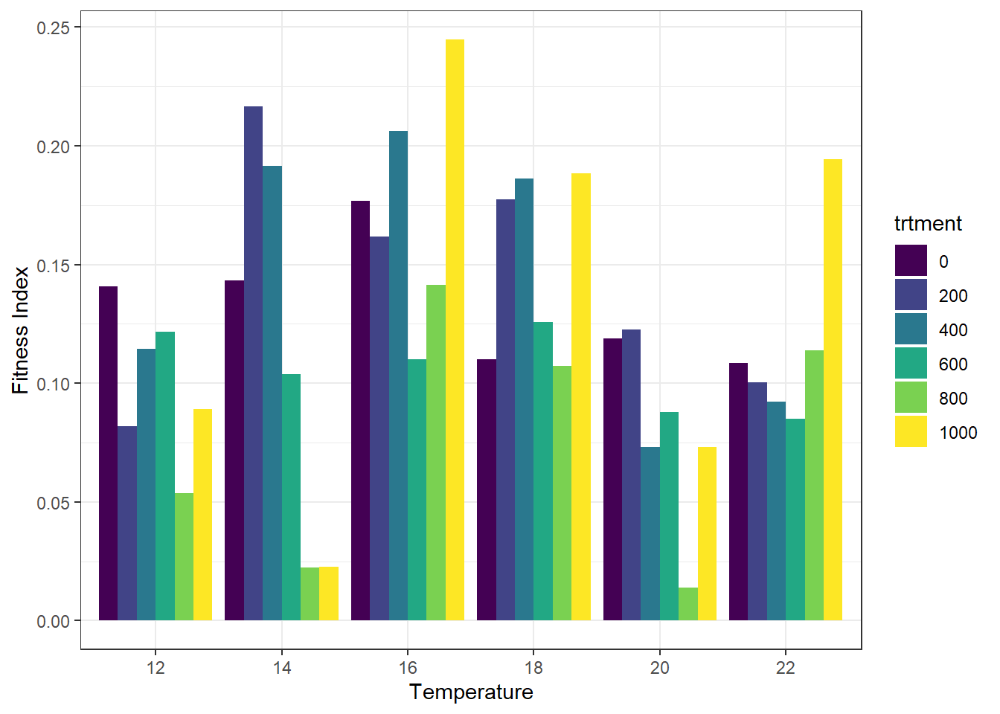
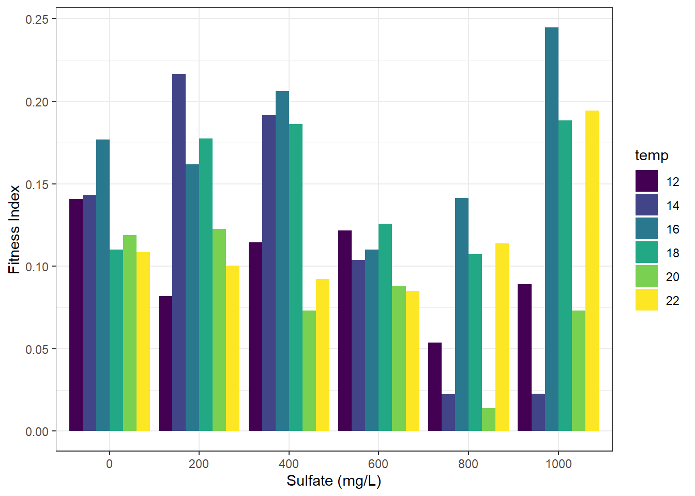
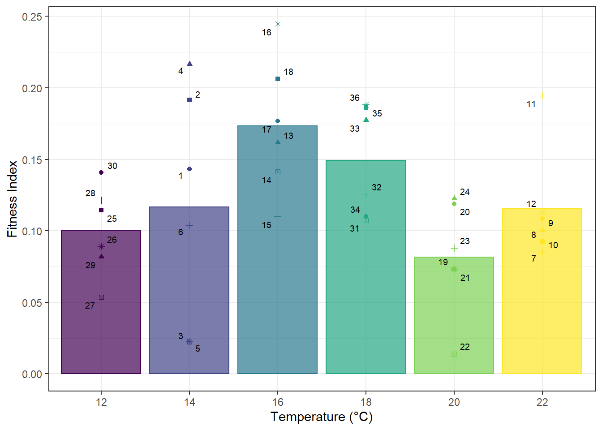
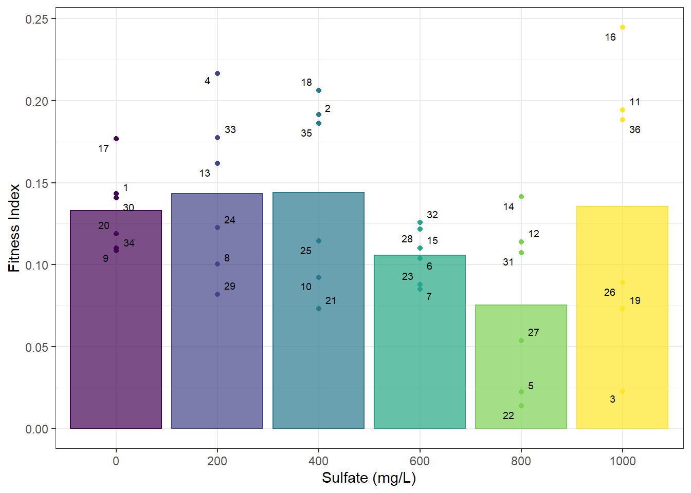

Chapter 4 Fitness index
We are ultimately interested in how overall organism fitness is impacted by sulfate levels. We can better visualize that through a fitness index that combines survival and growth measurements. The fitness index is calculated by multiplying percent survival by the average growth rate (G) for each treatment.
4.1 Generate fitness index
To generate our fitness index, we first need to source the data we’re interested in from our database ptery_sulf_db (Chapter 2). We will be using data from the head_width and survival tables, but only grabbing data for bugs who survived until the end of the experiment (week 22). We will also be omitting the first week of measurement data in head_width due to issues with observer error.
# only select head width information of individuals that were alive on 2nd measurement day and last
hw_survivors <- dbGetQuery(ptery_sulf_db, "SELECT *
FROM (SELECT *
FROM head_width
WHERE bug_id IN(
SELECT bug_id
FROM head_width
GROUP BY bug_id
HAVING COUNT(DISTINCT meas_id) = 12))
WHERE (week = 2) OR (week = 22);")
#nested inquiry isolates individuals alive on all dates
#WHERE statement selects only the data from last first and last measurement dates
end_survival <- dbGetQuery(ptery_sulf_db, "SELECT *
FROM survival
WHERE date = '2020-12-28';")
sum(end_survival$survival) ## [1] 240Output should read 240, which is the number of individuals alive in the last measurement date out of 360.
Next, we will calculate the growth rate for each individual using the specific growth rate (G) equation.
hw_survivors <- hw_survivors[,c(2,5:7)]
hw_survivors <- spread(hw_survivors, week, head_width)
hw_survivors <- hw_survivors %>%
dplyr:: rename(init = 3, final = 4) %>%
mutate(ln = log(final/init), G = (ln/140)*100 ) #140 days between 08/10 and 12/28
#average growth rate for each tank
tank_fit <- aggregate(hw_survivors[,6], list(hw_survivors$tank), mean)
tank_fit <- tank_fit %>%
dplyr::rename(tank = Group.1, avg_G = x)To calculate the fitness index, we want survival to be represented as the proportion of individuals alive out of 10.
#change survival numbers to proportions
end_survival <- end_survival %>%
mutate(surv_prop = survival/10)Finally, we will use the specific growth rate (G) data and the survival data to create our fitness index for each tank.
#create fitness index
tank_fit <- tank_fit %>%
mutate(surv_prop = end_survival$surv_prop,
fit_index = (surv_prop*avg_G),
temp = end_survival$set_temp,
trtment = end_survival$sulfate_trtment)
###NOTE: first, third, fourth line of mutate code only worked well bc tanks were in order in both df's
###would need to recode to include some "by group" argument to get to work otherwise4.2 Data visualization
4.2.1 3D Surface plot
prep <- tank_fit[order(tank_fit$trtment),] #reordering survival.wide by sulfate level
prep1 <- prep[order(prep$temp),] #now reordering by temperature
#you want the reordering steps so that you can predictably label the z matrix w/ temp and sulfate
#column/row names. the original survival.wide had treatments in no particular order
temp <- seq(12, 22, 2) #setting up matrix colnames
sulf <- seq(0, 1000, 200) #rownames
z <- matrix(prep1$fit_index, 6, 6) #reformatting 36 survival data points into matrix, by treatment
rownames(z) <- sulf
colnames(z) <- temp
surf_fit <- plot_ly(type = "surface", z=z, x=temp, y=sulf)
surf_fit <- surf_fit %>% layout(scene = list(xaxis = list(title = 'Temperature'),
yaxis = list(title = 'Sulfate mg/L'),
zaxis = list(title = 'Fitness Index')))
surf_fitNot seeing a clear trend from the 3D surface plot, whether it be to temperature, sulfate, or an interaction of the two. (hint: it moves! drag it around to view from different angles)
4.2.2 Grouped bar plots
Let’s visualize the data by one treatment at a time (temperature first, then sulfate). The method we will use here still shows individual tanks and what their treatment level was of the other treatment, but we group bars by the primary treatment we are visualizing.
tank_fit$temp <- as.factor(tank_fit$temp)
tank_fit$trtment <- as.factor(tank_fit$trtment)
#grouped by temp
ggplot(tank_fit, aes(fill=trtment, y=fit_index, x=temp)) +
geom_bar(position="dodge", stat="identity") +
scale_fill_viridis_d()+
labs(x = "Temperature (°C)", y = "Fitness Index", fill = "Sulfate (mg/L)") +
theme_bw()
#grouped by sulfate treatment
ggplot(tank_fit, aes(fill=temp, y=fit_index, x=trtment)) +
geom_bar(position="dodge", stat="identity")+
scale_fill_viridis_d()+
labs(x = "Sulfate (mg/L)", y = "Fitness Index", fill = "Temperature (°C)") +
theme_bw()
Hmm… again, no clear patterns. Perhaps this is because grouped bar plots like this are a bit messy. Let’s average fitness index values across single treatments to simplify the plots.
4.2.3 Fitness index averaged bar plots
#fitness index averaged by temp
avg <- tank_fit %>%
group_by(temp) %>%
summarise(fit_index = mean(fit_index))
ggplot(tank_fit, aes(x=temp, y=fit_index, color = temp, fill = temp)) +
geom_point() +
geom_bar(data=avg, stat = "identity", alpha = 0.7) +
ggrepel::geom_text_repel(aes(label = tank), color = "black", size = 2.5, segment.color = "grey") +
scale_color_viridis_d() +
scale_fill_viridis_d() +
labs(x = "Temperature (°C)", y = "Fitness Index") +
theme_bw() +
theme(legend.position = "none")
#fitness index averaged by sulfate treatment
avg <- tank_fit %>%
group_by(trtment) %>%
summarise(fit_index = mean(fit_index))
ggplot(tank_fit, aes(x=trtment, y=fit_index, color = trtment, fill = trtment)) +
geom_point() +
geom_bar(data=avg, stat = "identity", alpha = 0.7) +
ggrepel::geom_text_repel(aes(label = tank), color = "black", size = 2.5, segment.color = "grey") +
scale_color_viridis_d() +
scale_fill_viridis_d() +
labs(x = "Sulfate (mg/L)", y = "Fitness Index") +
theme_bw() +
theme(legend.position = "none")
In the plots, the points represent individual tanks, while the bars represent the average fitness index of those tanks.
There is almost a unimodal patterned response to temperature, but fitness is a bit higher in the highest temp. This is surprising, because other research from my lab has shown Pteronarcys californica has an optimal temperature of about 14-16, and really marginal to no survival at high temperatures like 22C. No clear trends in response to sulfate levels.